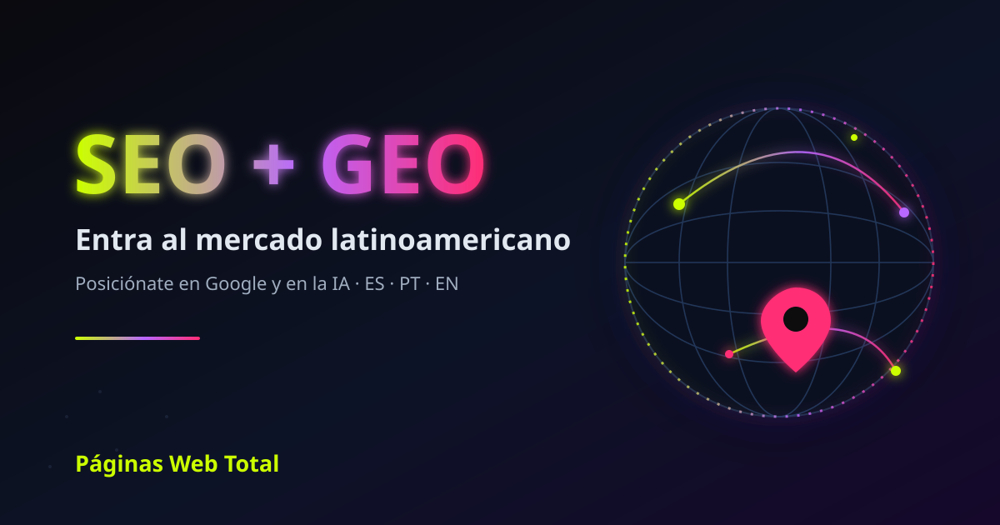

Cómo entrar al mercado latinoamericano con SEO y GEO

Si tu empresa está fuera de Latinoamérica y quiere vender en la región, la forma más rentable de entrar no es la publicidad pagada: es posicionarte en Google y lograr que la inteligencia artificial —ChatGPT, Gemini, Perplexity y Google AI Overviews— te recomiende a los compradores latinos. En esta guía te explicamos cómo, y por qué necesitas un partner local.
Por qué Latinoamérica es una oportunidad ahora
Latinoamérica supera los 650 millones de personas, con una de las tasas de adopción de internet móvil y comercio electrónico de mayor crecimiento del mundo. El mercado tiene dos idiomas dominantes —español y portugués de Brasil— y un comprador que investiga en línea antes de decidir. Para una empresa extranjera con buen producto, el cuello de botella casi nunca es la demanda: es la visibilidad local.
El error más caro: traducir en vez de localizar
Traducir tu web al español no es entrar al mercado. Cada país busca distinto: el español de Colombia, México y Argentina usa palabras diferentes, y el portugués de Brasil es prácticamente otro idioma comercial. Una localización profesional adapta las palabras clave reales, la intención de búsqueda, la moneda, los métodos de pago y las señales locales que Google y la IA usan para decidir a quién mostrar.
SEO + GEO: la combinación que genera confianza en un mercado nuevo
Cuando entras a un país donde nadie conoce tu marca, la confianza lo es todo. El SEO te hace aparecer en los resultados de Google de la región. El GEO (Generative Engine Optimization) hace que ChatGPT, Gemini o Perplexity te citen directamente cuando un comprador latino pregunta por una solución como la tuya. Ser citado por la IA en un mercado nuevo equivale a una recomendación instantánea: el comprador te descubre ya validado.
Cómo posicionar tu empresa en Latinoamérica en 4 pasos
1. Diagnóstico local. Medimos cómo te ven hoy Google y la IA en la región y qué hacen tus competidores latinos. Puedes empezar gratis con nuestra herramienta de visibilidad GEO.
2. Localización real. Adaptamos tu contenido a español y portugués de Brasil con keyword research por país, hreflang correcto y datos estructurados (Schema.org).
3. Autoridad y citación. Construimos backlinks y menciones locales, y estructuramos tu contenido para que la IA pueda extraerlo y citarte.
4. Medición. Reportamos posiciones, tráfico y frecuencia de citación por IA con dashboards GA4 y Power BI.
Medir mi visibilidad GEO gratis
Por qué un partner local marca la diferencia
Páginas Web Total lleva más de 14 años (desde 2012) ejecutando proyectos de SEO y GEO en más de 15 países y 35 industrias. Conocemos cómo busca y compra el público latino, dominamos el español y el portugués, y trabajamos con un enfoque de Data Science. Para una empresa extranjera, esto significa entrar al mercado sin cometer los errores costosos de quien lo intenta desde afuera.
Preguntas frecuentes
¿Cómo puede una empresa extranjera posicionarse en Latinoamérica?
Con SEO local (contenido en español y portugués de Brasil, hreflang correcto y autoridad regional) y GEO para ser citada por ChatGPT, Gemini y Google AI Overviews. Un partner local acelera el proceso y evita errores de localización.
¿Basta con traducir mi web al español para vender en LATAM?
No. Traducir no es localizar. Cada país busca distinto y el portugués de Brasil es otro idioma de mercado. Hay que adaptar palabras clave, intención, moneda y señales locales.
¿Qué es GEO y por qué importa para entrar a un nuevo mercado?
GEO optimiza tu marca para que la IA generativa te cite en sus respuestas. En un mercado donde no tienes reputación, ser citado por ChatGPT o Gemini genera confianza inmediata.
¿Páginas Web Total trabaja con empresas de fuera de Latinoamérica?
Sí. Acompañamos a empresas de Asia, Europa y otras regiones que quieren entrar al mercado latino, con conocimiento local de SEO y GEO en español y portugués.